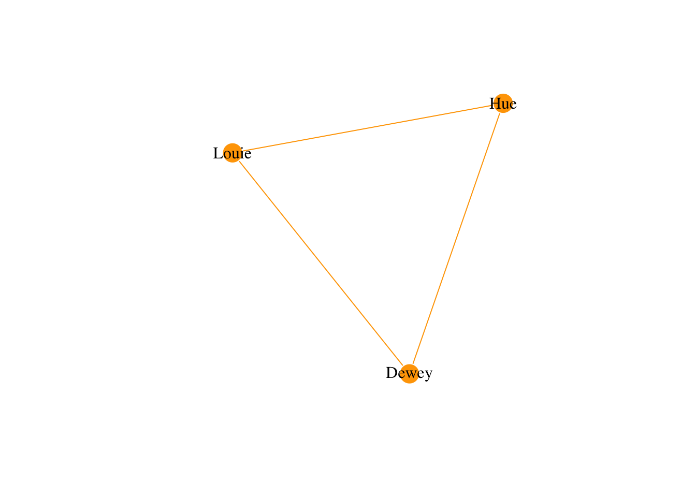

Week 3, Class 2: Relational Data Part 2
Working With Relational Data
Last week, we argued that arranging your data according to the principles of relational data is beneficial. It allows for efficient storage of data (we do not repeat the same information) and is unambiguous in distinguishing entities from each other (the requirement of primary key for each table). Each table is also easier to understand. All of them store information about entities of one type, one entity per row.
However, working with multiple tables instead of one also means we need to be able to join, intersect and otherwise manipulate a collection of tables instead of one. Fortunately, the main tools to do that have already been introduced during the first week. By using the joins, working with multiple tables is easy. The main idea is that the primary keys of each table are foreign keys in other tables (or even in the same table in another column). By matching primary keys of one table to the foreign keys, we can connect entities of different type to each other by their relations. Combined with other tidyverse functions, joins make relational data easy to manage and “query”. By querying, we mean selecting subsets of the data.
Next, we will go through joins by explaining in more detail what they do and provide examples of the different operations. ## Joins and relational data The second chapter of the first week introduced the basic idea of joins and demonstrated the use of inner_join. We recommend reading that section about joins again first. The other joins also work by connecting tables by keys, but they differ in what they do after matching the keye in the tables. left_join, right_join and full_join are like inner_join in the sense that they return variables from both tables. left_join and right_join add the variables from the right (left) table to the left (right) table based on key matches, whereas full_join returns rows from both tables. Usage of these functions can create NA values to the data.
anti_join and semi_join only return variables of the first argument. First returns only those rows for which the key(s) used in matching can only be found from the first argument. Later returns all rows from the first argument with mach in the second.
To demonstrate the use of joins with relational data, we return to the example (pseudo) correspondence network from the last chapter.
print("A table of persons:")## [1] "A table of persons:"print(pseudo_data_person)## person_id person_name person_occupation
## 1 p_id_1 Hue theologian
## 2 p_id_2 Louie lens grinder
## 3 p_id_3 Dewey philosopherprint("A table of cities:")## [1] "A table of cities:"print(pseudo_data_city)## city_id city_name city_location
## 1 c_id_1 Frankfurt Main
## 2 c_id_2 Aachen Westfalen
## 3 c_id_3 Frankfurt Oderprint("A table of letters:")## [1] "A table of letters:"print(pseudo_data_letter)## letter_id letter_name letter_topic sender_id
## 1 l_id_1 Absence of data management data p_id_3
## 2 l_id_2 Absence of tenures for lens grinders economy p_id_1
## 3 l_id_3 Absence of pseudo name for letter titles meta commentary p_id_2
## receiver_id city_in_which_received_id
## 1 p_id_1 c_id_1
## 2 p_id_2 c_id_2
## 3 p_id_3 c_id_3We can use left_join or right_join to connect correspondents to letters.
sender_to_letter <- left_join(pseudo_data_person,pseudo_data_letter,by=c("person_id"="sender_id"))
print(sender_to_letter)## person_id person_name person_occupation letter_id
## 1 p_id_1 Hue theologian l_id_2
## 2 p_id_2 Louie lens grinder l_id_3
## 3 p_id_3 Dewey philosopher l_id_1
## letter_name letter_topic receiver_id
## 1 Absence of tenures for lens grinders economy p_id_2
## 2 Absence of pseudo name for letter titles meta commentary p_id_3
## 3 Absence of data management data p_id_1
## city_in_which_received_id
## 1 c_id_2
## 2 c_id_3
## 3 c_id_1We could also combine the joining of tables with other operations. For example, we could first filter the occupations of the people sending the letter to be academic ones, and then join join the table. This would result in a table of letters sent by people with academic occupation:
sender_to_letter_academic <- pseudo_data_person %>% filter(person_occupation!="lens grinder") %>% left_join(.,pseudo_data_letter,by=c("person_id"="sender_id"))
print(sender_to_letter_academic)## person_id person_name person_occupation letter_id
## 1 p_id_1 Hue theologian l_id_2
## 2 p_id_3 Dewey philosopher l_id_1
## letter_name letter_topic receiver_id
## 1 Absence of tenures for lens grinders economy p_id_2
## 2 Absence of data management data p_id_1
## city_in_which_received_id
## 1 c_id_2
## 2 c_id_1The other joins can be used to link and subset tables as well. If we wanted to compare our data set to another set of people with an additional column birth year:
print(pseudo_data_person_new_table)## person_id person_name person_occupation person_birth_year
## 1 p_id_3 Dewey philosopher 1600
## 2 p_id_4 Agnus theologian 1575
## 3 p_id_5 Crassus natural philosopher 1590Then we could use full_join to get people in both tables:
full_list_of_people <- full_join(pseudo_data_person,pseudo_data_person_new_table,by=c("person_id"="person_id"))
print(full_list_of_people)## person_id person_name.x person_occupation.x person_name.y person_occupation.y
## 1 p_id_1 Hue theologian <NA> <NA>
## 2 p_id_2 Louie lens grinder <NA> <NA>
## 3 p_id_3 Dewey philosopher Dewey philosopher
## 4 p_id_4 <NA> <NA> Agnus theologian
## 5 p_id_5 <NA> <NA> Crassus natural philosopher
## person_birth_year
## 1 NA
## 2 NA
## 3 1600
## 4 1575
## 5 1590Or inner_join for those in both tables
exclusive_list_of_people <- inner_join(pseudo_data_person,pseudo_data_person_new_table,by=c("person_id"="person_id"))
print(exclusive_list_of_people)## person_id person_name.x person_occupation.x person_name.y person_occupation.y
## 1 p_id_3 Dewey philosopher Dewey philosopher
## person_birth_year
## 1 1600Notice that both full_join and inner_join (and also left_join and right_join) return variables from both tables, which sometimes returns NA’s like in the full_join example. The x and y at the end of the names of the table are the result of us doing the joining by the unique identifier, other variables are treated as separate even if they have the same name. Without the specification of the variable by which the matching is done, variables with the same name (and only those) are treated as same.
anti_join and semi_join only keep the variables from the first argument. anti_join could be used to keep only the people from the first table of people with the following:
full_list_of_people <- anti_join(pseudo_data_person,pseudo_data_person_new_table,by=c("person_id"="person_id"))
print(full_list_of_people)## person_id person_name person_occupation
## 1 p_id_1 Hue theologian
## 2 p_id_2 Louie lens grinderSemi join would return only those instances of the first table that are present in the second one, in this case the one shared person:
full_list_of_people <- semi_join(pseudo_data_person,pseudo_data_person_new_table,by=c("person_id"="person_id"))
print(full_list_of_people)## person_id person_name person_occupation
## 1 p_id_3 Dewey philosopherJoins, filters and other functions can also be used to subset data in more complex ways. For example, we could want to study only letters sent by philosophers, born in the 17th century and present in both lists of people (perhaps the lists are from two different scholars, and we only want to study individuals they both have listed). We would get exactly this information in multiple ways, here’s one.
philosophers_both_lists_17th_century <- pseudo_data_person_new_table %>% filter(person_birth_year>=1600 & person_birth_year<1700 & person_occupation=="philosopher") %>% semi_join(.,pseudo_data_person,by="person_id") %>% semi_join(pseudo_data_letter,.,by=c("sender_id"="person_id"))
print(philosophers_both_lists_17th_century)## letter_id letter_name letter_topic sender_id receiver_id
## 1 l_id_1 Absence of data management data p_id_3 p_id_1
## city_in_which_received_id
## 1 c_id_1First, we required the occupation and the birth year in the filter. After that, we used semi_join to find those people who are present in both tables (that now must also be philosophers born in the 17th century, as one of the tables was filtered so before the join). Having now the right people, we used semi_join again to connect these individuals to the letters sent by them (we matched the tables by matching the primary key person_id of one table to the foreign key sender_id of another), and as semi_join only returns the variables from the first argument, we only get the letters from these individuals.
We have no discussed how to work with relational data at a general level. To not forger that the main theme of this course are networks, we next demonstrate how this example data can be used to construct one.
Creating A Network From Relational Data
We have now spent some time speaking about data in general, and less about networks specifically. However, relational data can be the basis for constructing a network as well, and we demonstrate it here by using the tools and (relational) data we are already using.
Relational data often makes creating the node list a trivial thing. If the nodes are one of the entities in your data, you already have it. For example, in our correspondence network the table of people is a perfectly fine node list as such, no additional work needed. Because the correspondence network depicts connections formed by exchange of letters, the edge list should have at least all the id’s of senders in the from column and all the id’s of the receiver in the to column. In our case, we also get the edge list directly from the relational data, as the table of letters has the id’s of the receivers in one variable and the id’s of senders on another.
node_list <- pseudo_data_person %>% distinct(person_id,person_name)
edge_list <- pseudo_data_letter %>% distinct(sender_id,receiver_id) %>% rename(.,from=sender_id,to=receiver_id)
graph <- igraph::graph_from_data_frame(d=edge_list, vertices=node_list, directed = FALSE)
plot(graph, edge.arrow.size=.2, edge.color="orange",
vertex.color="orange", vertex.frame.color="#ffffff",
vertex.label=V(graph)$person_name, vertex.label.color="black",edge.width=E(graph)$weight)
We could have constructed the network without the steps of data modeling and turning the data into relational data. On the other hand, in our example doing the data modeling and splitting first might have made “seeing” the elements of the network easier than it would have been in one table with all the information related to all types of entities. As conceptual and logical data models can be visualised as graphs, we can turn the idea other way around: by taking a network perspective on data, we can see it structure as edges (relations between attributes) and nodes (entity types).
Other Practical Questions With Relational Data
Here we go through some other aspects of working with (relational) data.
How to store it? Like we discussed last week, relational data is often stored to databases. However, even a collection of csv tables - each storing one of the entity tables - will do in many instances. For work that you do by yourself or in a small group, this is often enough.
What to do if there are no unique identifiers in the data, how do I get primary keys? At least three solutions exists, creating your own identifiers, getting them from some external resource, or using some external tool to create unique identifiers for you. If you have a fixed amount of data that has already been harmonised (e.g. there are no longer name variants or such as different entities), then something as simple as giving an unique id for each row in each entity table can be enough. There are also R functions that create ids out of unique combinations of fields if some set of attributes define the entities uniquely or closely enough. For example, we could deduce that people with the same name, same birth year and same occupation would most likely be the same person, but whether or not to do this is good enough depends on the context.
In the simple case in which you have data that has been already harmonised and some attributes uniquely define a person, the creation of primary keys can look something like this:
pseudo_data_person_new_table_without_ids <- pseudo_data_person_new_table[,c(2:4)]
#This is the second table of people without primary keyes
print(pseudo_data_person_new_table_without_ids)## person_name person_occupation person_birth_year
## 1 Dewey philosopher 1600
## 2 Agnus theologian 1575
## 3 Crassus natural philosopher 1590#Now we add them
pseudo_data_person_new_table_with_ids <- pseudo_data_person_new_table_without_ids %>% mutate(.,unique_combinations=paste(person_name,person_occupation,person_birth_year,sep="-"))
print(pseudo_data_person_new_table_with_ids)## person_name person_occupation person_birth_year
## 1 Dewey philosopher 1600
## 2 Agnus theologian 1575
## 3 Crassus natural philosopher 1590
## unique_combinations
## 1 Dewey-philosopher-1600
## 2 Agnus-theologian-1575
## 3 Crassus-natural philosopher-1590#And if we want to have more concise identifier, then we could do something like this
pseudo_data_person_new_table_with_ids_concise <- pseudo_data_person_new_table_with_ids %>% mutate(.,person_id=paste0("p_id_",as.numeric(as.factor(unique_combinations))))
print(pseudo_data_person_new_table_with_ids_concise)## person_name person_occupation person_birth_year
## 1 Dewey philosopher 1600
## 2 Agnus theologian 1575
## 3 Crassus natural philosopher 1590
## unique_combinations person_id
## 1 Dewey-philosopher-1600 p_id_3
## 2 Agnus-theologian-1575 p_id_1
## 3 Crassus-natural philosopher-1590 p_id_2The generation of the person id might seem a little confusing, but it is simple when broken down into pieces. Each of the unique combinations of name,occupation and birth year is treated as a factor (a data type in R), each factor has a number assigned to it, there are as many as there are levels in the factor. In our case, the factor has three levels, one for each unique name-occupation-birth year combination. The factor is converted to the number of its level with as.numeric, and this number is attached at the end of the person_id to define the combination of information uniquely.
This is an idealised situation, as the data was already harmonised and we could be certain of the attributes that uniquely define a thing. This is one of the reasons why harmonisation is so important in practical work with (relational) data.
Like we discussed at the end of the last week, it is also possible to use external resources to get unique identifiers. As this approach has many potential benefits, like the potential to significantly enrich your data with new information, the reading from this week will be an introduction to the ideas of open linked data and SPARQL.
For the Next Week
The reading for the next week is part of a Programming Historian tutorial about linked open data (Blaney2017?). Read the following sections from it: Introduction and Lesson Scope,Linked open data: what is it?,The role of the Uniform Resource Identifier URI and How LOD organises knowledge:ontologies. We will discuss the tutorial next week. Especially, everyone should be prepared to answer these four questions in front of the class. Who answers will be selected randomly during the lecture (one person per question, no more than one question per student). The questions are:
The questions are:
- Q: What are the parts of a triple?
- Q: What does ontology mean (in this context)?
- Q: What can URI (unique resource identifier) describe?
- Q: What can Linked Open Data do that a Relational database can’t?